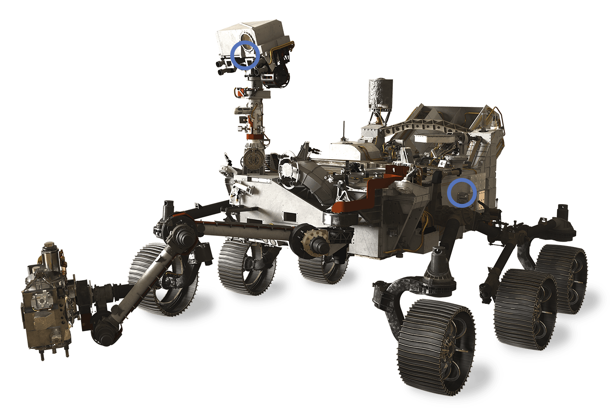

Mars 2020 Mission
Launched by NASA Mars exploration program in June 2020, Mars 2020 Mission consists of Perseverance rover and the Ingenuity helicopter drone.
This mission is keen to address high-priority science goals including the key-questions related to potential life on Mars.
This mission is not only concerned about possibility of life on the Red Planet sometime in the Past, but also about existencec of current microbial life
in the present. It is expected to reach Martian orbit in February 2021.
Ingenuity Helicopter

The Helicopter's aim is to use flight technology to scout interesting targets on Mars and plan best driving routes for future Mars rovers.
Diameter: 120 cm
Height: 80 cm
Landing Mass: 1.8 Kg
Power source: 350 watts
Rotor-speed: 2400 rpm
Maximum altitude: 10 m
Maximum speed: 10 m/s
Persevarence Rover

The rover specifically consists of a drill that can set aside rock samples in a Cache for future missions to collect
Length: 3 m
Height: 2.7 m
Weight: 1,025 Kg
Power source: Multi-Mission Radioisotope Thermoelectric Generator (MMRTG).